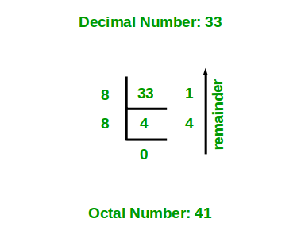

Given a decimal number as input, we need to write a program to convert the given decimal number into equivalent octal number. i.e convert the number with base value 10 to base value 8. The base value of a number system determines the number of digits used to represent a numeric value. For example, the binary number system uses two digits 0 and 1, octal number system uses 8 digits from 0-7 and decimal number system uses 10 digits 0-9 to represent any numeric value.
Examples:
Input : 16 Output : 20 Input : 10 Output : 12 Input: 33 Output: 41
Algorithm:
- Store the remainder when the number is divided by 8 in an array.
- Divide the number by 8 now
- Repeat the above two steps until the number is not equal to 0.
- Print the array in reverse order now.
For Example:
If the given decimal number is 16.
Step 1: Remainder when 16 is divided by 8 is 0. Therefore, arr[0] = 0.
Step 2: Divide 16 by 8. New number is 16/8 = 2.
Step 3: Remainder when 2 is divided by 8 is 2. Therefore, arr[1] = 2.
Step 4: Divide 2 by 8. New number is 2/8 = 0.
Step 5: Since number becomes = 0. Stop repeating steps and print the array in reverse order. Therefore the equivalent octal number is 20.
Below diagram shows an example of converting the decimal number 33 to equivalent octal number.

Below is the implementation of above idea.
C/C++
// C++ program to convert a decimal
// number to octal number
#include <iostream>
using namespace std;
// function to convert decimal to octal
void decToOctal(int n)
{
// array to store octal number
int octalNum[100];
// counter for octal number array
int i = 0;
while (n != 0) {
// storing remainder in octal array
octalNum[i] = n % 8;
n = n / 8;
i++;
}
// printing octal number array in reverse order
for (int j = i - 1; j >= 0; j--)
cout << octalNum[j];
}
// Driver program to test above function
int main()
{
int n = 33;
decToOctal(n);
return 0;
}